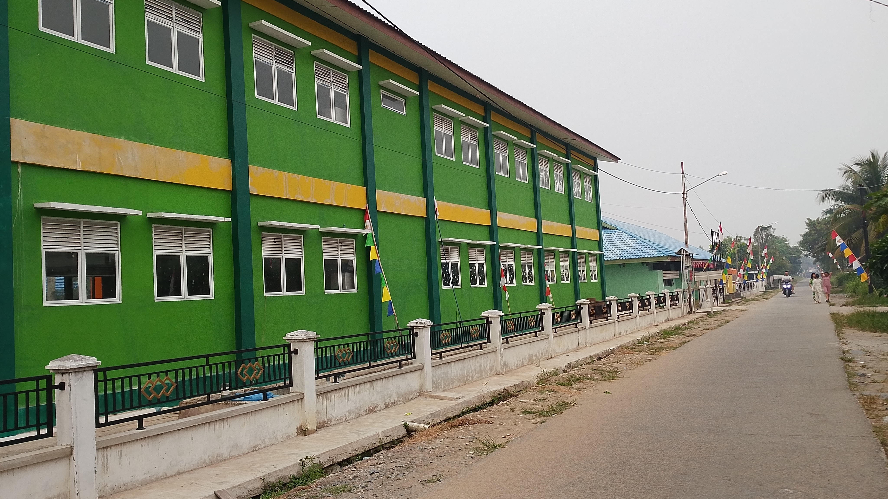

Keindahan
Harmoni Desa
Nikmati keindahan alam, budaya, dan kehidupan masyarakat desa yang penuh dengan kebersamaan.
Sederhana, Asri, dan Penuh Kehangatan
Desa memiliki keindahan yang tidak hanya terlihat dari alamnya, tetapi juga dari kehidupan masyarakat dan budaya yang terus dijaga.
Alam yang Asri
Hamparan sawah, pepohonan hijau, dan udara segar membuat suasana desa terasa nyaman.
Kehidupan Desa
Kehidupan masyarakat yang sederhana dan penuh kebersamaan menjadi ciri khas desa.
Gotong Royong
Semangat saling membantu membuat hubungan antarwarga semakin erat.

Kehidupan Desa yang Sederhana
Inilah salah satu sudut desa yang menggambarkan kehidupan masyarakat yang sederhana, nyaman, dan penuh kebersamaan.
“Keindahan desa bukan hanya tentang alam, tetapi juga tentang kebersamaan di dalamnya.”